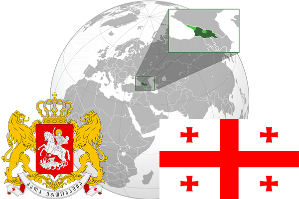

To`liq nomi: Gruziya
Region: G`arbiy Osiyo va Sharqiy Yevropa
Qonunchilik shakli: Respublika
Mustaqillik kuni: 9-aprel 1991 - yil (Sobiq Ittifoqdan)
Poytaxt: Tbilisi
Maydoni: 69 700 km² (dunyoda 118 -o`rinda )
Chegaradosh davlatlari: Rossiya, Ozarbayjon, Armaniston, Turkiya
Aholisi: 3 718 200 (dunyoda 130 - o`rinda, 2017 -yil roʻyxat)
Aholi zichligi: 65 /km²
Aholining o`rtacha yoshi: 76,55 yil ( 80,1 ayollar, 73,0 erkaklar)
Rasmiy tili: gruzin tili
Dini: Pravoslav xristianlar
Pul birligi: gruzin larisi
Telefon prefiksi: +995
Internet domen: .ge
Xalqaro tashkilotlarga a`zoligi: BMT (1992 – yildan)
Dengiz va okeanlarga chiqishi: Qora dengiz
YIM: Butun: $ 37,209 mlrd Jon boshiga $ 9,1722 (2014 - yil roʻyxati)
Yirik shaharlari: Tbilisi, Kutaisi, Batumi, Rustavi, Zugdidi, Poti, Gori